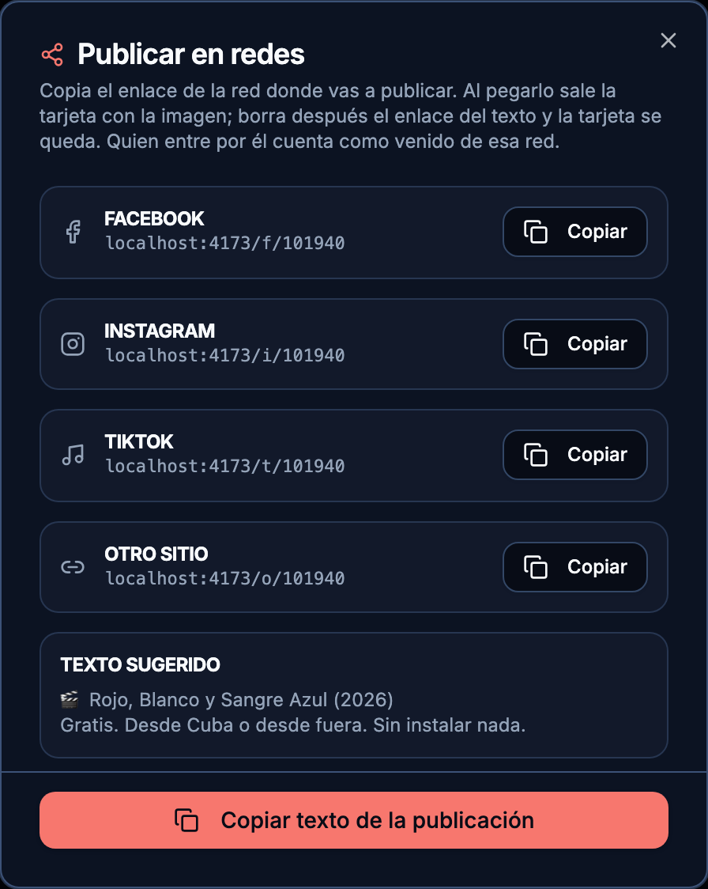
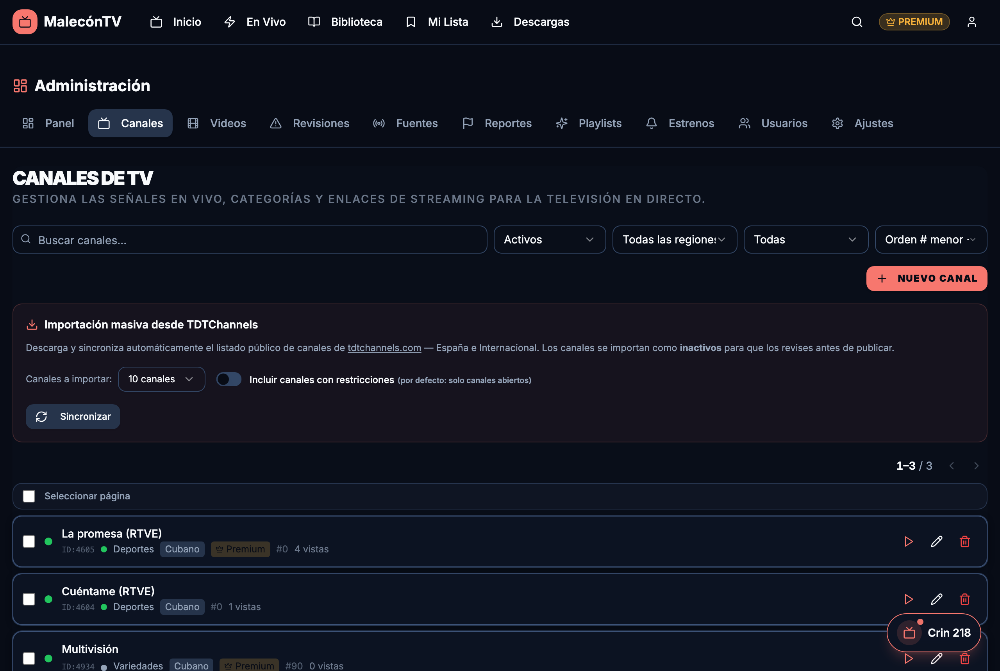
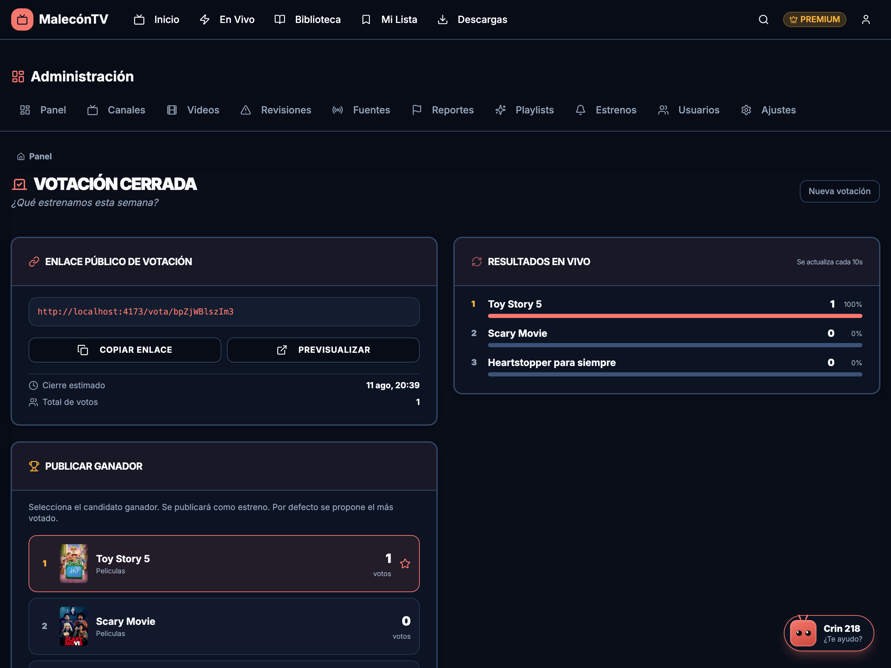

Catálogo
Vídeos (películas y series)
En Admin › Vídeos gestionas el catálogo. Cada vídeo tiene categoría, año, duración, imágenes (póster vertical + backdrop horizontal para el hero), etiquetas y su URL. El punto de color junto al ID indica su estado de salud (ver Salud).
- Importación — llega desde Fuentes (archive.org, TMDB) a Revisiones, donde lo apruebas antes de publicar. También hay importación manual.
- Premium — al crear, se marca premium automáticamente según una regla 60/40 por tipo; se puede forzar manualmente. El premium se libera al cabo de un tiempo.
- Descargas — el contenido descargable se guarda para ver offline (PWA). Los embeds no son descargables por diseño salvo cuando el resolver lo permite.
- Publicar en redes — icono de compartir en cada fila y junto al título de la ficha. Abre un asistente con el enlace corto por red (
malecontv.es/f/ID,/i/ID,/t/ID,/o/ID) y un texto sugerido; se copia con un clic. Al pegarlo en la red sale la tarjeta con la imagen y el título (los episodios con el nombre de la serie). Quien entre por él cuenta como venido de esa red (ver Usuarios › Origen). Los canales tienen el mismo botón (/f/c/ID).

- Edición masiva — selecciona varios vídeos y cambia de golpe activo, destacado, premium, descarga, categoría, país, clasificación, fecha de estreno, playlists y Tags (escríbelos separados por coma; lo escrito reemplaza los tags de los seleccionados).Series en los “Top 10” de la portada. Cada serie sale como una sola tarjeta con su nombre (no episodios sueltos), enlazando a su página de serie. La fila “Series que Enganchan” solo aparece cuando hay 3 o más series en el catálogo.
Teleplay (categoría)
Qué es la categoría Teleplay y dónde sale. Es para el teleplay y el cortometraje cubanos: ficción de una sola pieza, que no llega a película pero tampoco es un programa. Antes se marcaban como Programas Cubanos y quedaban fuera de sitio.
- Dónde se ve — no tiene carril propio en Inicio: sale dentro de “Lo Mejor de Nuestra TV”, junto a las teleseries cubanas, igual que el cine cubano sale en “Cine con Sabor a Cuba”.
- En la tarjeta — la etiqueta dice Teleplay y el año, no “Programa”.
- Dónde elegirla — en el desplegable de categoría de Vídeos, Revisiones, Playlists, Próximos estrenos, Fuentes e Importar con IA. En Buscar aparece su chip y en Biblioteca, la opción Teleplays.
- No cuenta como serie — ni en el Top 10 de series ni en las estadísticas del panel.
Tipos de fuente de vídeo
Cada película o episodio tiene una URL de vídeo. Según de dónde sea, la app la trata de una forma distinta. Esta es la lista completa de lo que hay hoy y cómo se trabaja con cada una:
| Fuente | Cómo entra | Cómo se ve | Descarga | Subtítulos | Qué vigilar |
|---|---|---|---|---|---|
| archive.org (cine cubano y clásicos, MP4) | Importación automática desde Fuentes (colección, solo populares) o pegando la URL del fichero | Directo, pasando por nuestro proxy | Sí | Solo si subes un .srt/.vtt en la ficha |
Va lento a saltos (1,5 s por trozo); los cortes en la tele suelen ser esto. Ver Fallos comunes |
MP4 / HLS directo (.mp4, .m3u8) |
URL pegada en la ficha | Directo (HLS con calidades automáticas) | MP4 sí | Igual que archive.org | Que el servidor de origen no cape la IP del VPS |
VIDEASY (películas y series por id de TMDB: /embed/movie/ID, /embed/tv/ID/T/E) |
Importación TMDB desde Fuentes (solo con audio o subtítulos en español y con stream) o a mano | El servidor lo resuelve a un stream HLS y lo sirve por el proxy; calidad automática | Sí por defecto (el admin puede quitarlo) | Los del propio embed + español gestionado por el admin (OpenSubtitles) | “FUENTE NO DISPONIBLE” = el proveedor cambió o capó la IP. Salud con Verificar Videos Embed (pesado) |
ok.ru (ok.ru/video/ID) |
Solo a mano, pegando la URL; no hay importación (ok.ru no deja buscar sin cuenta) | Igual que VIDEASY: resuelto a HLS con calidades | Sí | Los que publica el propio vídeo (en los “[vose]”, español y portugués); sin gestor | Que ok.ru no bloquee la IP del VPS (403/429 en el log del proxy) |
| YouTube / Dailymotion / Vimeo | URL pegada | Reproductor incrustado de ellos (iframe) | No | No | YouTube /live sin id de vídeo no reproduce; se comprueba sin clave |
| vidsrc / vidlink (familia antigua) | Ya no se importa | Igual que VIDEASY cuando aún responden | Sí por defecto | Como VIDEASY | Murieron por Turnstile; lo que quede se cambia a VIDEASY |
Reglas que valen para todas: el muro Premium y el pre-estreno dependen de la ficha (premium, fecha de estreno), no de la fuente; el punto de color de salud junto al ID sale para todas; y las descargas solo existen donde la tabla dice “Sí” (un embed sin id de TMDB y que no sea ok.ru nunca es descargable, lo marques como lo marques).
Canales en vivo
En Admin › Canales. Señales HLS/M3U8, YouTube, OK.ru, Dailymotion, MP4 directo, etc. Se pueden importar en bloque desde TDTChannels (España e Internacional; entran inactivos para revisarlos).

Si un canal sale como caído pero sabes que funciona para tus usuarios, márcalo “Excluir Health” en su ficha: el cron dejará de tumbarlo. Ver Fallos comunes.
Estrenos y votaciones
- Estrenos — calendario que programa
release_date(con margen y cadencia). El contenido “estrena” en su fecha. - Votación — abres una campaña con candidatos (de Revisiones); los usuarios votan en
/vota/:token; publicas el ganador como estreno. La votación abierta aparece también en/library(sección con los candidatos y “Tu voto decide”).
